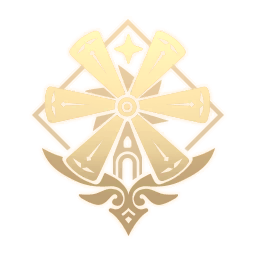
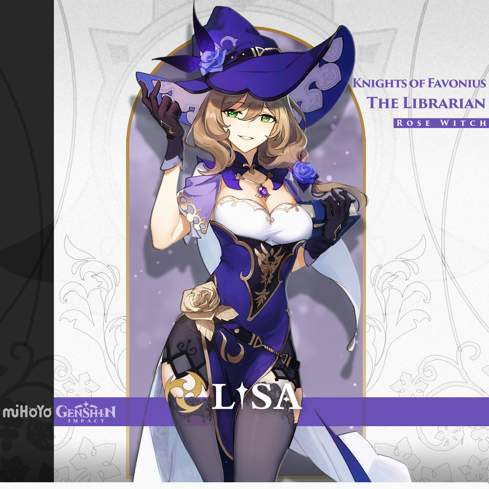
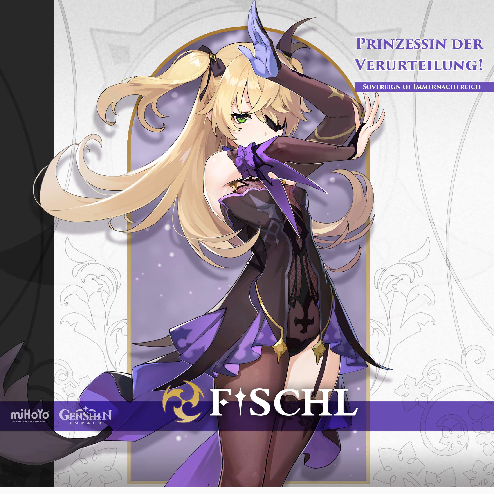

Mondstadt (German: Mondstadt "Moon City") is one of the seven nations in Teyvat, and the first in which the Traveler starts to look for their lost sibling. It is the city-state that worships Barbatos, the Anemo Archon.

Archon : Barbatos
Archon's Nickname : God Of Freedom
Controlling Entity : Knight Of Favonius
Real-life nation reference : Germany
Jean Gunnhildr
Jean ‧ Knight Of Favonius Acting Grand Master
Dandelion Knight
"The righteous and rigorous Dandelion Knight, and Acting Grand Master of the Knights of Favonius of Mondstadt."
— In-game character attributes text
Vision : Anemo
Nationality : Mondstadt
Affiliation : Knight Of Favonius , Four Winds , Gunnhildr Clan
Constellation : Leo Minor
Weapon : Sword
Birthday : March 14th
Rarity : ★★★★★
See more on wiki :
Amber
Amber ‧ Knight Of Favonius Outrider
Champion Glider
"A perky, straightforward girl, who is also the only Outrider of the Knights of Favonius. Her amazing mastery of the glider has made her a three-time winner of the Gliding Championship in Mondstadt. As a rising star within the Knights of Favonius, Amber is always ready for any challenging tasks."
— Description from Official Website
Vision : Pyro
Nationality : Mondstadt
Affiliation : Knight Of Favonius
Constellation : Lepus
Weapon : Bow
Birthday : August 10th
Rarity : ★★★★
See more on Wiki :
Lisa

Lisa ‧ Knight Of Favonius Librarian
Rose Witch
"She is an intellectual witch who can never get enough naps. As the Librarian of the Knights of Favonius, Lisa is smart in that she always knows exactly what to do with whatever troubles her. As much as she loves her sleep, she still manages to keep everything under control in a calm, composed manner."
— Description from official website
Vision : Electro
Nationality : Mondstadt
Affiliation : Knight Of Favonius , Sumeru Academia (Formerly)
Constellation : Tempus Fugit
Weapon : Catalyst
Birthday : June 9th
Rarity : ★★★★
See more on Wiki :
Kaeya Alberich
Kaeya ‧ Knight Of Favonius Quartermaster
Frostblade
"In the Knights of Favonius, Kaeya is the most trusted aide for the Acting Grand Master Jean. You can always count on him to solve any intractable problems. Everyone in Mondstadt loves Kaeya, but no one knows what secrets this witty, charming knight has..."
— Description from official website
Vision : Cryo
Nationality : Mondstadt , Khaenri'ah
Affiliation : Knights of Favonius , Khaenri'ah (Formerly)
Constellation : Pavo Ocellus
Weapon : Sword
Birthday : November 30th
Rarity : ★★★★
See more on Wiki :
Barbara Pegg
Barbara ‧ Knight Of Favonius Deaconess
Shining Idol
"The Deaconess of the Favonius Church and a shining starlet adored by all. Although the concept of a starlet is rather novel in a city of bards, the people of Mondstadt love Barbara nonetheless. "I owe everything to the city's spirit of freedom" — Barbara, regarding her popularity."
— Description from official website
Vision : Hydro
Nationality : Mondstadt
Affiliation : Church of Favonius
Constellation : Crater
Weapon : Catalyst
Birthday : July 5th
Rarity : ★★★★
See more on Wiki :
Diluc Ragnvindr
Diluc ‧ Master of The Dawn Winery
The Shadow of Dawn
"As the wealthiest gentleman in Mondstadt, the ever-dapper Diluc always presents himself as the epitome of perfection. But behind the courteous visage burns a zealous soul that has sworn to protect Mondstadt at all costs, allowing him to mercilessly vanquish all who threaten his city."
— Description from official website
Vision : Pyro
Nationality : Mondstadt
Affiliation : Dawn Winery , Knights of Favonius (Formerly)
Constellation : Noctua
Weapon : Claymore
Birthday : April 30th
Rarity : ★★★★★
See more on Wiki :
Razor
Razor ‧ Legend of Wolfendom
Wolf Boy
"Some say he is an orphan raised by wolves. Others say he is a wolf spirit in human form. He is most at home in the wild, fighting with claw and thunder. To this day the wolf boy can be found prowling the forest, where he and his wolf pack hunt to survive using nothing more than their animal instincts."
— Description from official website
Vision : Electro
Nationality : Mondstadt
Affiliation : Wolfendom
Constellation : Lupus Minor
Weapon : Claymore
Birthday : September 9th
Rarity : ★★★★
See more on Wiki :
Venti (Barbatos)
Venti ‧ Singer of Skyward Sonnets
Windborne Bard
"A bard that seems to have arrived on some unknown wind - sometimes sings songs as old as the hills, and other times sings poems fresh and new. Likes apples and lively places but is not a fan of cheese or anything sticky. When using his Anemo power to control the wind, it often appears as feathers, as he's fond of that which appears light and breezy."
— Description from official website
Gnosis : Anemo
Nationality : Mondstadt , Khaenri'ah
Affiliation : City of Mondstadt , Archons
Constellation : Carmen Dei
Weapon : Bow
Birthday : June 16th
Rarity : ★★★★★
See more on Wiki :
Klee
Klee ‧ Fleeing Sunlight
Spark Knight
"Knights of Favonius Spark Knight! Forever with a bang and a flash! —And then disappearing from the stern gaze of Acting Grand Master Jean. Sure, time in solitary confinement gives lots of time to think about new gunpowder formulas...But it'd still be better to not be in solitary in the first place."
— Description from official website
Vision : Pyro
Nationality : Mondstadt
Affiliation : Knights of Favonius
Constellation : Trifolium
Weapon : Catalyst
Birthday : July 27th
Rarity : ★★★★★
See more on Wiki :
Bennett
Bennett ‧ Trial by Fire
Leader of Benny's Adventure Team
"The few young adventurers that the Mondstadt Adventurers' Guild has always found themselves tangled up in baffling bouts of bad luck. He is the only active member of his own adventure group, known as "Benny's Adventure Team," after all the other members decided to "take leave" following a series of unfortunate incidents. As a result, the team is currently on the verge of being dissolved. Being unable to break the poor boy's heart, Katheryne of the Adventurers' Guild has kept "Benny's Adventure Team" on the books, whilst also hiding from him the fact that all the other members have long since officially left the team."
— Description from official website
Vision : Pyro
Nationality : Mondstadt
Affiliation : Adventurer's Guild
Constellation : Rota Calamitas
Weapon : Sword
Birthday : February 29th
Rarity : ★★★★
See more on Wiki :
Noelle
Noelle ‧ Chivalric Blossom
Maid of Favonius
"Like most of Mondstadt's young people, Noelle always dreamed of being a knight of Favonius when she grew up. She may not have what it takes to be a knight just yet, but she is learning. Working as a maid at the Knights' headquarters, she is constantly taking notes on what constitutes knightly speech, knightly conduct, and knightly customs. She holds firm to her belief that one day she will join their ranks - she just needs to keep trying her hardest at everything she does."
— Description from official website
Vision : Geo
Nationality : Mondstadt
Affiliation : Knights of Favonius
Constellation : Parma Cordis
Weapon : Claymore
Birthday : March 21st
Rarity : ★★★★
See more on Wiki :
Fischl von Luftschloss Narfidort (Amy)

Fischl ‧ Prinzessin Der Verurteilung !
Sovereign of Immernachtreich
"A mysterious girl who calls herself "Prinzessin der Verurteilung" and travels with a night raven named Oz. Currently serves as an investigator in the Adventurers' Guild. Through her unique abilities, eccentric character, and (while she would never admit it herself) hard work, Fischl has become a rising star among the Adventurers' Guild's investigators, earning the recognition of all."
— Description from official website
Vision : Electro
Nationality : Mondstadt
Affiliation : Adventurer's Guild
Constellation : Corvus
Weapon : Bow
Birthday : May 27th
Rarity : ★★★★
See more on Wiki :
Sucrose
Sucrose ‧ Harmless Sweetie
Knights of Favonius Alchemist
"An alchemist with an insatiable curiosity towards the world and everything in it. Attached to the Knights of Favonius as an assistant to Albedo, her area of focus is "bio-alchemy." She strives to enrich the world by transforming living things with the power of alchemy. Granted, the products of her research sometimes prove to be more weird than wonderful — but on the whole, she has made monumental contributions to the field of bio-alchemy."
— Description from official website
Vision : Anemo
Nationality : Mondstadt
Affiliation : Knights of Favonius
Constellation : Ampulla
Weapon : Catalyst
Birthday : November 26th
Rarity : ★★★★
See more on Wiki :
Mona Megistus
Mona ‧ Astral Reflection
Enigmatic Astrologer
"A mysterious young astrologer who proclaims herself to be "Astrologist Mona Megistus," and who possesses abilities to match the title. Erudite, but prideful. Though she is often strapped for cash and lives a life of thrift, she is resolved to never use astrology for profit... It is this very resolution that has caused her to constantly fret about money."
— Description from official website
Vision : Hydro
Nationality : Mondstadt
Affiliation : Hexenzirkel
Constellation : Astrolabos
Weapon : Catalyst
Birthday : August 31st
Rarity : ★★★★★
See more on Wiki :
Diona
Diona ‧ Kätzlein Cocktail
Popular Bartender of Cat's Tail
"The incredibly popular bartender of the Cat's Tail tavern, rising star of Mondstadt's wine industry, and the greatest challenger to its traditional powerhouses.
A feisty feline young lady from Springvale, any drink mixed by Diona's hand tastes delicious beyond belief.
Yet given her extreme distaste for alcohol, is her talent a blessing or a curse?"
— Description from official website
Vision : Cryo
Nationality : Mondstadt
Affiliation : Cat's Tail Tavern , Kätzlein Family
Constellation : Feles
Weapon : Bow
Birthday : January 18th
Rarity : ★★★★
See more on Wiki :
Albedo
Albedo ‧ Kreideprinz
Chief Alchemist of the Knights of Favonius
"Albedo — an alchemist based in Mondstadt, in the service of the Knights of Favonius.
"Genius," "Kreideprinz," or "Captain of the Investigation Team"... Such titles and honors are of no consequence to him when there is so much more research to conduct.
The pursuit of fortune and connections cannot hold a candle to his heart's desire — acquiring the limitless, obscure knowledge left behind by previous generations of scholars."
— Description from official website
Vision : Geo
Nationality : Mondstadt
Affiliation : Knights of Favonius
Constellation : Princeps Cretaceus
Weapon : Sword
Birthday : September 13th
Rarity : ★★★★★
See more on Wiki :
Rosaria
Rosaria ‧ Thorny Benovelence
A Nonconforming Sister
"A sister of the church, though you wouldn't know it if it weren't for her attire. Known for her sharp, cold words and manner, she often works alone."
— Description from official website
Vision : Cryo
Nationality : Mondstadt
Affiliation : Church of Favonius
Constellation : Spinea Corona
Weapon : Polearm
Birthday : January 24th
Rarity : ★★★★
See more on Wiki :
Eula Lawrence
Eula ‧ Spindrift Knight
Captain of the Knights of Favonius Reconnaissance Company
"A rebellious descendant of the old aristocracy who is always out on the battlefield.
As one born into the old aristocracy, carrying the bloodline of sinners, Eula has needed a unique approach to the world to navigate the towering walls of prejudice peacefully. Of course, this did not prevent her from severing ties with her clan. As the outstanding Spindrift Knight, she hunts down Mondstadt's enemies in the wild to exact her unique "vengeance.""
— Description from official website